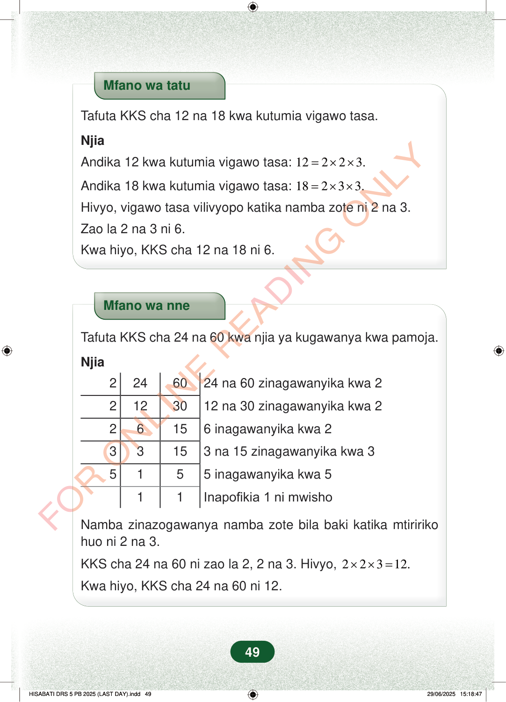

Mfano wa tatuTafuta KKS cha 12 na 18 kwa kutumia vigawo tasa.NjiaAndika 12 kwa kutumia vigawo tasa:12223.=××Andika 18 kwa kutumia vigawo tasa:18233.=××Hivyo, vigawo tasa vilivyopo katika namba zote ni 2 na 3.Zao la 2 na 3 ni 6.Kwa hiyo, KKS cha 12 na 18 ni 6.Mfano wa nneTafuta KKS cha 24 na 60 kwa njia ya kugawanya kwa pamoja.Njia2246024 na 60 zinagawanyika kwa 22123012 na 30 zinagawanyika kwa 226156 inagawanyika kwa 233153 na 15 zinagawanyika kwa 35155 inagawanyika kwa 511Inapofikia 1 ni mwishoNamba zinazogawanya namba zote bila baki katika mtiririkohuo ni 2 na 3.KKS cha 24 na 60 ni zao la 2, 2 na 3. Hivyo,22312.××=Kwa hiyo, KKS cha 24 na 60 ni 12.49
Mfano wa tatu
Tafuta KKS cha 12 na 18 kwa kutumia vigawo tasa.
Njia
Andika 12 kwa kutumia vigawo tasa: 12 2 2 3. = × ×
Andika 18 kwa kutumia vigawo tasa: 18 2 3 3. = × ×
Hivyo, vigawo tasa vilivyopo katika namba zote ni 2 na 3.
Zao la 2 na 3 ni 6.
Kwa hiyo, KKS cha 12 na 18 ni 6.
Mfano wa nne
Tafuta KKS cha 24 na 60 kwa njia ya kugawanya kwa pamoja.
Njia
2 24 60 24 na 60 zinagawanyika kwa 2
2 12 30 12 na 30 zinagawanyika kwa 2
2 6 15 6 inagawanyika kwa 2
3 3 15 3 na 15 zinagawanyika kwa 3
5 1 5 5 inagawanyika kwa 5
1 1 Inapofikia 1 ni mwisho
Namba zinazogawanya namba zote bila baki katika mtiririko huo ni 2 na 3.
KKS cha 24 na 60 ni zao la 2, 2 na 3. Hivyo, 2 2 3 12. × × =
Kwa hiyo, KKS cha 24 na 60 ni 12.
49
Mfano wa tatuTafuta KKS cha 12 na 18 kwa kutumia vigawo tasa.NjiaAndika 12 kwa kutumia vigawo tasa: 12 = 2 × 2 × 3.Andika 18 kwa kutumia vigawo tasa: 18 = 2 × 3 × 3.Hivyo, vigawo tasa vilivyopo katika namba zote ni 2 na 3.Zao la 2 na 3 ni 6.Kwa hiyo, KKS cha 12 na 18 ni 6.Mfano wa nneTafuta KKS cha 24 na 60 kwa njia ya kugawanya kwa pamoja.Njia2246024 na 60 zinagawanyika kwa 22123012 na 30 zinagawanyika kwa 226156 inagawanyika kwa 233153 na 15 zinagawanyika kwa 35155 inagawanyika kwa 511Inapofikia 1 ni mwishoNamba zinazogawanya namba zote bila baki katika mtiririko huo ni 2 na 3.KKS cha 24 na 60 ni zao la 2, 2 na 3. Hivyo, 2 × 2 × 3 = 12.Kwa hiyo, KKS cha 24 na 60 ni 12.